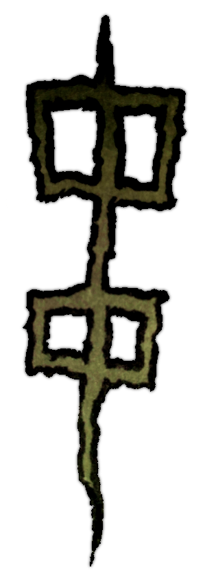
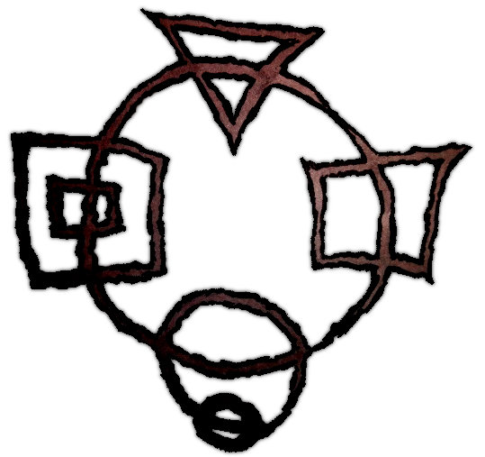

This is the symbol for center in chinese. But I think that the concept of middle is wrong. What if I have two circles? Then there is two middles, but the symbol only has one center.
And so I present to you the two center symbol. But there is still a problem. Here I represent two centers appart from each others. Why not make theme at the same place?
...
